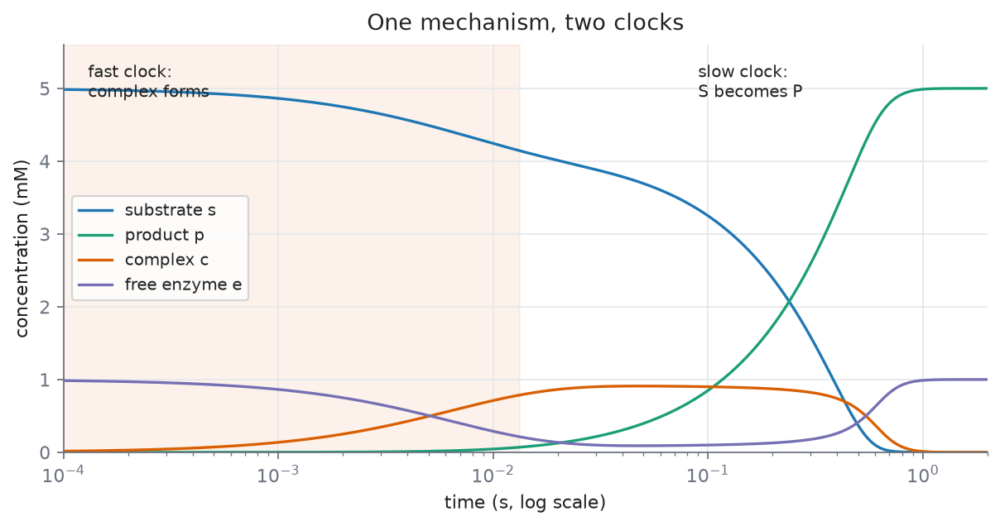

L05 — Enzyme Kinetics I: the mechanism and the Michaelis-Menten equation
Practical: 
03_enzyme_kinetics_I
TKBM262615 Komputasi Biologi, Lecture 5 (Enzyme Kinetics I). Draws on enzyme catalysis, separation of time scales, quasi steady state approximation, rapid equilibrium approximation and michaelis menten kinetics. Source: Ingalls Ch. 3, §3.1. Companion practical: notebooks/03_enzyme_kinetics_I.ipynb.
Bahasa Indonesia:
notes.id.md. The two versions carry the same material, the same equations and the same numbers; read whichever you think in.
By the end of this lecture you should be able to:
- Write the mass-action equations for the mechanism \(E + S \rightleftharpoons ES \to E + P\) and use the enzyme conservation to remove one of them.
- State the quasi-steady-state assumption (QSSA) for the ES complex, give both independent reasons the complex is fast, and explain why the result is a function of time rather than a constant.
- Derive the Michaelis-Menten equation from that assumption, naming every simplification used.
- Read \(V_{max}\) and \(K_M\) off a curve, say what each does and does not depend on, and give the condition under which \(K_M\) may be read as a binding affinity.
Retrieval: what L04 left you holding
Answer from memory:
- Why is a conservation relation exact, and why is a reduction using one free?
- What does Euler’s method assume across a single step?
- You halve the step size. What happens to the error?
Answers
- Because a conservation follows from the structure of the network — which arrows exist — not from the values of the rate constants. Nothing is approximated; the reduced model is the same model, written shorter.
- That the rate holds constant across that step. It does not, and that is the entire error.
- It halves. That is what “first-order method” means, and it is a bad deal.
Number 1 is the one today needs most. You will use a conservation once, exactly, and then fifteen minutes later use a reduction that looks identical on the board and is a bet. Keeping those two apart is the real intellectual work of this lecture.
The hook: a straight line that is not there
Mass action for \(S \to P\) predicts a rate \(k[S]\): proportional to substrate, forever, a straight line through the origin with no ceiling.
What is actually measured for an enzyme-catalysed reaction is a curve that bends over and flattens towards a limit as substrate rises. You met this shape back in L01 as “the shape biology uses to build a switch or a ceiling”, with no mechanism attached. Today it gets one.
Which is wrong, the law or the measurement?
Neither. Mass action is being asked a question it was never built to answer.
Part 1 — What an enzyme actually does
Lowers the barrier, not the destination
An enzyme is a protein that binds its substrate at an active site complementary to it in shape and chemistry — the lock-and-key picture. Binding lowers the energy barrier the reactants must climb to reach the high-energy transition state, so the reaction proceeds faster in both directions.
That phrase “in both directions” carries us to the next point.
The equilibrium is untouched, and it has to be
The position of equilibrium is set by the energies of reactants and products. An enzyme touches neither — it only lowers the barrier between them. Both directions speed up by the same factor, so the ratio at equilibrium is unchanged.
This is worth deriving as a consequence rather than accepting as a rule. Suppose a catalyst could shift an equilibrium. Then you could add it to push a reaction one way, remove it, add a different catalyst to push the reverse reaction, and cycle the two forever, extracting net work from nothing. A perpetual motion machine.
Since that is physically impossible, catalysis cannot shift an equilibrium. The rule is a theorem, not an empirical footnote.
One arrow is three reactions
Here is the diagnosis, and the whole lecture rests on it.
“\(S \to P\), catalysed by an enzyme” is not an elementary reaction. It is binding, unbinding and conversion. Mass action applies perfectly well to those three steps — it simply does not apply to the lump.
Mass action did not fail. We applied it at the wrong level. The remedy: descend one level to the elementary reactions, apply mass action there, then climb back.
Every saturating rate law in this course comes from that manoeuvre.
The mechanism
The full picture (equation 3.1) has two complexes, enzyme-substrate and enzyme-product:
\[S + E \rightleftharpoons C_1 \rightleftharpoons C_2 \rightleftharpoons P + E\]
Two simplifications, and Ingalls states both openly rather than smuggling them in:
- Lump \(C_1\) and \(C_2\), assuming their interconversion is fast compared with association and dissociation. This is itself a rapid-equilibrium assumption.
- Product never rebinds free enzyme. Justified because “laboratory measurements of reaction rates are typically carried out in the absence of product”. This is what makes the resulting rate law irreversible; the reversible version is equation (3.9).
What remains, and what this course uses:
\[S + E \;\underset{k_{-1}}{\overset{k_1}{\rightleftharpoons}}\; C \;\overset{k_2}{\longrightarrow}\; P + E \tag{3.2}\]
\(k_2\) is the catalytic constant, often written \(k_{cat}\).
Why saturation has to happen
Before reading on: what would have to be true for the rate to stop rising as you keep adding substrate?
The answer: you run out of enzyme. The enzyme pool is limited. At high substrate every active site is occupied, and adding more S barely moves the rate at all.
Saturation now has a physical cause, not merely a curve shape.
Part 2 — Writing the equations down
Mass action, one arrow at a time
Each arrow in (3.2) is an elementary reaction, so mass action applies to each. With \(s, e, c, p\) for the concentrations:
\[\frac{ds}{dt} = -k_1se + k_{-1}c\] \[\frac{de}{dt} = k_{-1}c - k_1se + k_2c\] \[\frac{dc}{dt} = k_1se - k_{-1}c - k_2c\] \[\frac{dp}{dt} = k_2c\]
Four species, four equations. This is pure L03 practice, and it should feel easy.
A mirror symmetry, not a coincidence
Look at the equations for \(e\) and for \(c\). Every term in one appears negated in the other:
\[\frac{de}{dt} = -\frac{dc}{dt}\]
If two derivatives are always exactly opposite, what can you say about their sum?
Zero. And a quantity whose derivative is zero is a constant. You have just derived a conservation by Route 2 from L04, on a system that genuinely matters.
The enzyme conservation
\[e_T = e + c = \text{constant}\]
Free enzyme plus bound enzyme, fixed for all time. The enzyme is a conserved moiety: it is not consumed by the reaction, only occupied. This is the example promised last week.
Substitute \(e = e_T - c\) and the equation for \(e\) disappears entirely:
\[\frac{ds}{dt} = -k_1s(e_T - c) + k_{-1}c\] \[\frac{dc}{dt} = k_1s(e_T - c) - k_{-1}c - k_2c \tag{3.3}\] \[\frac{dp}{dt} = k_2c\]
This reduction is exact. Nothing is approximated. Hold on to that, because in twenty minutes you will see a manoeuvre that looks identical on the board and is not.
An honest stopping point
Three equations remain, and the system is still nonlinear: there is an \(sc\) product in it, and that product will not integrate by hand.
We have used the only exact reduction available and still cannot solve it.
That is what makes the next move necessary, rather than merely convenient.
Part 3 — The quasi-steady-state assumption
Two clocks in one mechanism
Look at Ingalls’ Figure 3.3A. There are two timescales inside the same mechanism:
- Fast. S and E associate and dissociate.
- Slow. S is converted through to P.
Reactions can differ in speed by orders of magnitude, and when the difference is large enough you may treat the fast one as instantaneous relative to the slow one. The rule of thumb is a factor of ten.
This is not new machinery. It is an observation about clocks.

Figure: the four mass-action equations integrated with Ingalls’ constants (figs/mechanism_timecourse.py). The complex is half-formed after 0.0044 s; half the substrate has become product only after 0.29 s. The two clocks differ by a factor of about 66, comfortably more than ten. Throughout, \(e + c\) stays at \(e_T\) to within \(10^{-15}\) mM, which is the conservation of Part 2 checked numerically.
Two independent reasons C is fast
Ingalls names both, and both deserve equal weight:
- A difference in time constants. \(\frac{1}{k_1 + k_{-1}}\) for association and dissociation, against \(\frac{1}{k_2}\) for product formation.
- A difference in concentrations. “For many reactions in the cell, the substrate is far more abundant than the enzyme (\(s \gg e_T\)).”
The second is the one students overlook, and it is often the dominant one. If substrate vastly outnumbers enzyme, the enzyme pool fills and empties many times over while the substrate concentration has barely moved — so from the substrate’s point of view, the complex has already finished adjusting.
Remember reason 2. At the end of the lecture it is what will limit the validity of our result.
The procedure, stated generally first
The unit of approximation is a species, not a reaction. The condition: every reaction touching that species must be fast. If even one slow reaction touches it, it cannot keep up.
For C: binding (\(k_1\)), unbinding (\(k_{-1}\)) and conversion (\(k_2\)) all touch C, and all three are fast compared with the rate at which \(s\) changes.
The procedure:
- Identify the fast species.
- Replace its differential equation with an algebraic one: set the right-hand side to zero and solve.
- Substitute the result into the remaining equations.
- Recover the fast species from its algebraic formula whenever you need it.
Applying it to the complex
Take equation (3.3) for \(c\) and set the right-hand side to zero:
\[0 = k_1s(e_T - c^{qss}) - k_{-1}c^{qss} - k_2c^{qss}\]
Expand the first term:
\[0 = k_1se_T - k_1sc^{qss} - k_{-1}c^{qss} - k_2c^{qss}\]
Collect everything containing \(c^{qss}\) on one side:
\[k_1se_T = c^{qss}\left(k_{-1} + k_2 + k_1s\right)\]
And divide:
\[c^{qss}(t) = \frac{k_1e_T\,s(t)}{k_{-1} + k_2 + k_1s(t)}\]
That collection-of-terms step looks trivial written out here, but it is where most students lose the thread when doing it themselves. Redo it on paper without looking.
This is not a constant
Look at what is on the right-hand side. There is an \(s(t)\) in it. So \(c^{qss}\) is a function of time; it moves whenever \(s\) moves.
This is the most commonly mangled idea in the whole chapter, and the cause is the shorthand everyone uses. Ingalls warns about it explicitly:
This procedure is sometimes summarized as “set \(\frac{d}{dt}c^{qss}(t)\) to zero”. However, this is a problematic statement because it suggests that we are setting \(c^{qss}(t)\) to a constant value, which is not the case.
The correct way to say it:
We are replacing the differential description of \(c(t)\) with an algebraic description that says [C] instantaneously reaches the steady state it would attain if all other variables were constant. Because it equilibrates rapidly, the other variables are essentially constant “from C’s point of view”, i.e. on its fast time-scale.
The phrase to keep is “from C’s point of view”. On its own fast timescale, \(s\) has not had time to move, so C relaxes to the steady state appropriate to the current \(s\). Then \(s\) drifts a little, and C follows instantly.
C is not frozen. C is always caught up.
The rigorous version is singular perturbation theory, which gives explicit error bounds — Segel and Slemrod (1989).
The evidence, numerically
Panel B of this lecture’s figure tests that claim directly. At \(e_T = 0.1\) mM against \(s(0) = 5\) mM — a cell-like ratio — the solid curve is the true \(c(t)\) from the full mechanism, and the dashed curve is the algebraic formula \(c^{qss}(s(t))\), which contains no derivative at all.
After a short transient they agree to 2.3% of the enzyme pool. And both of them move throughout, tracking the \(s(t)\) drawn thinly beneath.
What if we simply assume equilibrium?
A reasonable question, and the answer carries both historical and conceptual value.
Michaelis and Menten (1913) assumed the binding step \(S + E \rightleftharpoons C\) sits at equilibrium. That is a different assumption: its unit is a reaction, not a species. It gives a rate law of the same form, but with
\[K_M = \frac{k_{-1}}{k_1} = K_S\]
a pure dissociation constant.
Briggs and Haldane (1925) applied the QSSA to the complex, as we have just done, and got
\[K_M = \frac{k_{-1} + k_2}{k_1}\]
Same curve, same data, different decomposition. This is Ingalls Exercise 3.1.1, and part of this week’s fading problem set.
Why do we use the second? Because the equilibrium assumption is more fragile, and the reason is structural. Look at the comparison figure on the simpler network: the equilibrium assumption imposes \([B]/[A] = k_1/k_{-1}\), which the true steady state does not satisfy when flux runs through that reaction — if there is flux, the forward rate does not equal the reverse rate, by definition. So its error never closes. The QSSA imposes \(\frac{dc}{dt} = 0\), which is exactly the condition the true steady state does satisfy, so its error does close.
| Assumes | Error during transient | Error at steady state | |
|---|---|---|---|
| Rapid equilibrium | a reaction is at equilibrium | yes | yes, persistent |
| Quasi-steady state | a species is at steady state | yes | none |
One structural fact explains both fates.
Part 4 — The Michaelis-Menten equation
Substitute back
The rate of product formation is \(k_2c\) — it always was, since we wrote the fourth equation. What is new is that \(c\) now has a formula in \(s\):
\[\frac{dp}{dt} = -\frac{ds}{dt} = \frac{k_2k_1e_T\,s}{k_{-1} + k_2 + k_1s} \tag{3.4}\]
This is what we were after: rate as a function of substrate concentration alone, with no differential equation for the complex.
Let that messy form sit for a moment before tidying it. You need to see the mess first, so that the next step reads as tidying-up rather than as a definition falling out of the sky.
Tidy it, then name what appears
Divide numerator and denominator by \(k_1\):
\[v = \frac{k_2e_T\,s}{\frac{k_{-1}+k_2}{k_1} + s}\]
Two groupings appear. Neither was planned. Name them now:
\[\boxed{\;V_{max} = k_2e_T, \qquad K_M = \frac{k_{-1} + k_2}{k_1}, \qquad v = \frac{V_{max}\,s}{K_M + s}\;} \tag{3.5}\]
Derived, not postulated. The form is called hyperbolic, because the curve is part of a hyperbola (Figure 3.4).
Stop here for a moment. This is the most important derivation in the course, and every symbol in it has an origin you can point at.
Part 5 — Reading the two constants
This is where the understanding lives, not in the algebra.
\(V_{max} = k_2e_T\) — a property of the tube, not of the protein
The limiting rate, approached but never reached. It is the catalytic constant times the total enzyme, which is what “the entire enzyme pool working at full capacity” means quantitatively. Units: concentration·time⁻¹.
\(V_{max}\) is proportional to how much enzyme you happen to have. Double the enzyme concentration and \(V_{max}\) doubles. So it is not a property of the enzyme alone.
If two laboratories report different \(V_{max}\) for the same enzyme, they may both be right.
\(k_{cat}\) — the property of the protein
\[k_{cat} = \frac{V_{max}}{e_T} = k_2\]
Turnovers per enzyme molecule per second. Units: time⁻¹. This is what you quote when you mean “how good is this enzyme”.
\(K_M\) — the half-saturating concentration
Substitute \(s = K_M\) into (3.5):
\[v(K_M) = \frac{V_{max}K_M}{K_M + K_M} = \frac{V_{max}}{2}\]
One line, and it turns \(K_M\) from a formula you memorise into something you can point at on a graph. Units: concentration. It sets where on the substrate axis the curve bends.
Double the enzyme: \(V_{max}\) doubles, \(K_M\) does not move. That is the diagnostic separating the two constants, and it is what you will use next week to tell types of inhibition apart.
Two regimes, one curve
\[s \ll K_M:\; v \approx \frac{V_{max}}{K_M}s \qquad\qquad s \gg K_M:\; v \approx V_{max}\]
At low substrate the denominator is about \(K_M\) alone, so the rate is linear in \(s\) — the first-order regime. At high substrate the denominator is about \(s\) alone, the \(s\) cancels, and the rate stops caring about substrate — the zero-order regime.
These two limits are how you read any saturating curve, not only an enzyme’s.
What a cell can and cannot control
- The linear regime. The enzyme reports substrate supply. Raise substrate, the rate rises in proportion.
- The saturated regime. The enzyme itself is the bottleneck. Substrate no longer matters.
The engineering consequence is immediate: your metabolic pathway is slow and its enzyme is saturated — how do you speed it up? Not by adding substrate. Raise the enzyme’s expression, or find a variant with a higher \(k_{cat}\).
This is where Ch. 3 stops being algebra.
Where the reduction breaks
\(K_M\) is not a binding affinity
You may have been taught that “\(K_M\) measures how tightly the enzyme binds its substrate”. That is true only when \(k_2 \ll k_{-1}\), which makes \(K_M \approx k_{-1}/k_1\), the dissociation constant. When catalysis is fast, \(k_2\) dominates and \(K_M\) is a mixture of binding and turnover — an enzyme with a large \(K_M\) may bind its substrate very tightly indeed.
Ingalls adds a related point in Exercise 3.1.1: the original Michaelis-Menten derivation used rapid equilibrium and gives a different formula for \(K_M\). Both fit the same data. His conclusion is worth quoting: “Experimental characterizations of Michaelis-Menten rate laws involve direct measurement of \(K_M\) and \(V_{max}\), so the relation between \(K_M\) and the individual kinetic constants is not significant.”
What is measured is \(K_M\) and \(V_{max}\). Their decomposition into elementary rate constants depends on which approximation you used to derive them.
Three other places the reduction breaks:
During the fast transient, by construction — the first moments after mixing, before C has built up.
When the enzyme is not scarce. Substrate sitting inside the complex C is not free S, but the reduced model has nowhere to hide it, so it counts that substrate as still free. This is the sequestration effect, and its size scales with \(e_T\):
\(e_T\) (mM) max gap in [S] as % of \(s(0)\) 1.0 0.842 mM 16.8% 0.1 0.087 mM 1.7% 0.01 0.009 mM 0.2% Ingalls exaggerates the error in the book’s figure deliberately, so that the mechanism is visible. In his own words: “In the cell, the ratio of substrate to enzyme molecules is typically much higher than in this simulation, so the sequestration effect is negligible.” This is reason 2 from Part 3 coming back to collect.
When product accumulates, since the irreversible form assumed product never rebinds. Use equation (3.9).
The code
# /// script
# dependencies = ["numpy", "scipy"]
# ///
"""The full mechanism against the Michaelis-Menten reduction. Ingalls Figure 3.3 parameters."""
import numpy as np
from scipy.integrate import solve_ivp
k1, km1, k2 = 30.0, 1.0, 10.0 # /mM/s, /s, /s
KM = (km1 + k2) / k1
s0 = 5.0 # mM
def full(t, y, eT):
"""Model (3.3): s, c, p. The enzyme conservation supplies e."""
s, c, p = y
e = eT - c
return [-k1 * s * e + km1 * c,
k1 * s * e - km1 * c - k2 * c,
k2 * c]
def reduced(t, y, eT):
"""Model (3.4): s and p only. The complex is gone."""
v = (k2 * eT) * y[0] / (KM + y[0])
return [-v, v]
tol = dict(rtol=1e-11, atol=1e-14, dense_output=True)
print(f"KM = {KM:.4f} mM")
for eT in (1.0, 0.1, 0.01):
t_end = 1.0 / eT # the reaction timescale goes like s0 / (k2 * eT)
t = np.linspace(0, t_end, 2000)
F = solve_ivp(full, [0, t_end], [s0, 0.0, 0.0], args=(eT,), **tol)
R = solve_ivp(reduced, [0, t_end], [s0, 0.0], args=(eT,), **tol)
s_full, c_full, _ = F.sol(t)
gap = np.max(R.sol(t)[0] - s_full)
# does the algebraic formula really track the true complex?
after = t > 0.05 * t_end
track = np.max(np.abs(c_full - k1 * eT * s_full / (km1 + k2 + k1 * s_full))[after])
print(f"eT={eT:<6g} Vmax={k2 * eT:<6g} max [S] gap={gap:.4f} mM"
f" ({gap / s0 * 100:5.2f}% of s0) max |c - c_qss|={track:.5f} mM")Output:
KM = 0.3667 mM
eT=1 Vmax=10 max [S] gap=0.8424 mM (16.85% of s0) max |c - c_qss|=0.16211 mM
eT=0.1 Vmax=1 max [S] gap=0.0871 mM ( 1.74% of s0) max |c - c_qss|=0.00248 mM
eT=0.01 Vmax=0.1 max [S] gap=0.0087 mM ( 0.17% of s0) max |c - c_qss|=0.00003 mMNotice that both error columns shrink with \(e_T\), though at different rates: the [S] gap falls roughly in proportion to \(e_T\), while the complex-tracking error falls faster still. That is not a coincidence — both are symptoms of the same condition, \(s \gg e_T\), and both vanish together once that condition holds comfortably.
Further reading, not derived today
Two pages in the wiki extend today’s result. Neither is assessed this week.
- kinetic order. A saturating rate law has no exponent to read off, so “order” is widened to \(\frac{s}{v}\frac{dv}{ds}\), which for Michaelis-Menten equals \(\frac{K_M}{K_M+s}\) and runs from 1 down to 0. It opens L06, where it becomes the measure of how switch-like a response is.
- two substrate reactions. Most enzymes have two substrates. They bind one at a time, and holding one of them fixed brings back the single-substrate form \(\frac{V'a}{K'+a}\). That is why the rate law derived today stays useful for enzymes whose second substrate (ATP, water) is abundant.
This week’s practical
notebooks/03_enzyme_kinetics_I.ipynb in lab-biotek-bio-ugm/TKBM262615_Practicals, runnable in Google Colab. It integrates the full mechanism, checks the QSSA against \(c^{qss}(t)\) after the fast transient, and reproduces the Michaelis-Menten curve by holding \(s\) fixed and integrating the \((e, c)\) subsystem to steady state. Three exercises: raise \(e_T\) until the QSSA degrades (Part 3’s “this is not a constant”), find \(v\) at \(s \approx K_M\) (should be about \(V_{max}/2\)), and halve \(k_{cat}\) to see that \(V_{max}\) moves while \(K_M\) does so only through \(k_2\) (it appears in \(K_M = (k_{-1}+k_2)/k_1\)).
Notation and constants differ from these notes. The notebook writes \(k_2\) as kcat, \(e_T\) as Etot, and uses \(k_1 = 100\ \mu\text{M}^{-1}\text{s}^{-1}\), \(k_{-1} = 50\ \text{s}^{-1}\), \(k_{cat} = 10\ \text{s}^{-1}\), \(e_T = 1\ \mu\text{M}\), \(s_0 = 100\ \mu\text{M}\) (so \(K_M = 0.6\ \mu\text{M}\), \(V_{max} = 10\ \mu\text{M/s}\)), not Ingalls’ constants used above. Problems 3 and 5 below can be done in that notebook by swapping in your own numbers.
Problem set
The problems fade: the first is today’s derivation, the last gives you only a question. Try each before opening its answer.
Problem 1 — reproduce (closed notes). Derive the Michaelis-Menten rate law (3.5) from mechanism (3.2). Mark the step where you use the enzyme conservation and the step where you use the QSSA, and say which of the two is exact.
Problem 2 — numbers. Take Ingalls’ constants \(k_1 = 30\ \text{mM}^{-1}\text{s}^{-1}\), \(k_{-1} = 1\ \text{s}^{-1}\), \(k_2 = 10\ \text{s}^{-1}\), with \(e_T = 0.1\) mM.
- Compute \(V_{max}\), \(K_M\) and \(k_{cat}\), with units.
- Compute \(v\) at \(s = K_M\), \(3K_M\) and \(10K_M\), as a fraction of \(V_{max}\).
- What substrate concentration gives 90% of \(V_{max}\)?
- Is \(K_M\) a good estimate of the binding affinity for these constants? Compare it with \(K_S = k_{-1}/k_1\).
Problem 3 — reading data (guided). Initial rates measured at seven substrate concentrations:
| \(s\) (mM) | 0.1 | 0.25 | 0.5 | 1 | 2 | 5 | 10 |
|---|---|---|---|---|---|---|---|
| \(v\) (mM/s) | 0.333 | 0.667 | 1.000 | 1.333 | 1.600 | 1.818 | 1.905 |
- Sketch the curve and estimate \(V_{max}\) and \(K_M\) by eye. Why is \(V_{max}\) larger than any rate in the table?
- Fit the rate law with
scipy.optimize.curve_fit. The skeleton:
# /// script
# dependencies = ["numpy", "scipy"]
# ///
import numpy as np
from scipy.optimize import curve_fit
s = np.array([0.1, 0.25, 0.5, 1, 2, 5, 10]) # mM
v = np.array([0.333, 0.667, 1.000, 1.333, 1.600, 1.818, 1.905]) # mM/s
def mm(s, Vmax, KM):
return ... # fill in
(Vmax, KM), _ = curve_fit(mm, s, v, p0=[..., ...]) # your eye estimates
print(f"Vmax = {Vmax:.3f} mM/s KM = {KM:.3f} mM")Problem 4 — independent (Ingalls Exercise 3.1.1). Michaelis and Menten (1913) assumed that the binding step \(S + E \rightleftharpoons C\) is at equilibrium instead of using the QSSA. Derive the rate law this gives. Show it has the same form as (3.5) and state its \(K_M\). Then write one paragraph: if the two derivations disagree about what \(K_M\) is made of, what did a laboratory actually measure when it reported a \(K_M\)?
Problem 5 — independent, computational. Using the code in Part 5, find the enzyme concentration at which the largest [S] gap between the full mechanism and the reduction falls to 1% of \(s(0)\). Express your answer as a ratio \(s(0)/e_T\) and relate it to the second reason, from Part 3, that the complex is fast.
Answers
1. As in Parts 2 to 4. The conservation \(e = e_T - c\) is exact; replacing \(\frac{dc}{dt}\) by zero is the approximation.
2. a) \(V_{max} = k_2e_T = 10 \times 0.1 = 1\) mM/s; \(K_M = (1 + 10)/30 = 0.367\) mM; \(k_{cat} = k_2 = 10\ \text{s}^{-1}\). b) With \(x = s/K_M\) the rate law is \(v/V_{max} = x/(1+x)\): 0.50, 0.75 and 0.91. c) \(0.9 = x/(1+x)\) gives \(x = 9\), so \(s = 9K_M = 3.3\) mM. d) No. \(K_S = 1/30 = 0.033\) mM, eleven times smaller than \(K_M\), because \(k_2 = 10\) is much larger than \(k_{-1} = 1\). The enzyme binds its substrate about eleven times more tightly than \(K_M\) suggests.
3. a) The rate at \(s = 0.5\) is half of about 2, so \(K_M \approx 0.5\) mM and \(V_{max} \approx 2\) mM/s. \(V_{max}\) is only approached as \(s \to \infty\), so every finite measurement sits below it. b) return Vmax * s / (KM + s), with p0=[2, 0.5]. The fit returns \(V_{max} = 2.000\) mM/s and \(K_M = 0.500\) mM; these data were generated from exactly those values, so real data would give a spread you would report with the covariance matrix.
4. Equilibrium of the binding step: \(k_1se = k_{-1}c\). With \(e = e_T - c\): \(k_1s(e_T - c) = k_{-1}c\), so \(c = \frac{e_Ts}{K_S + s}\) with \(K_S = k_{-1}/k_1\), and \(v = k_2c = \frac{V_{max}s}{K_S + s}\). Same form, with \(K_M = K_S\). What a laboratory measures is the curve, and so \(K_M\) and \(V_{max}\) themselves. Which combination of elementary rate constants \(K_M\) stands for depends on the approximation used, and the initial-rate curve cannot settle that. Ingalls says the same: the relation between \(K_M\) and the individual constants “is not significant” for experimental characterisation.
5. About \(e_T = 0.057\) mM, that is \(s(0)/e_T \approx 87\). At \(e_T = 0.1\) the gap is 1.74% and at \(e_T = 0.06\) it is 1.05%. The gap is substrate hidden inside the complex, so it shrinks as the substrate outnumbers the enzyme, which is the concentration reason (\(s \gg e_T\)).
Three sentences to carry into L06
- Chapter 3 is Chapter 2’s QSSA, applied to one particular network.
- \(V_{max}\) scales with the amount of enzyme; \(K_M\) does not.
- \(K_M\) is a binding affinity only when \(k_2 \ll k_{-1}\).
Next week the cell turns this rate down on purpose, in two different ways, and each way moves a different one of the two constants. Then the curve itself changes shape, from a hyperbola to a switch.
Sources
Ingalls Ch. 3 §3.1.1, pp. 48–52 (Figures 3.3, 3.4; equations 3.1–3.5, 3.8, 3.9) and §3.1.2; Exercises 3.1.1, 3.1.3. Michaelis and Menten (1913); Briggs and Haldane (1925); rigorous treatment of the QSSA in Segel and Slemrod (1989). See ingalls ch03 biochemical kinetics.